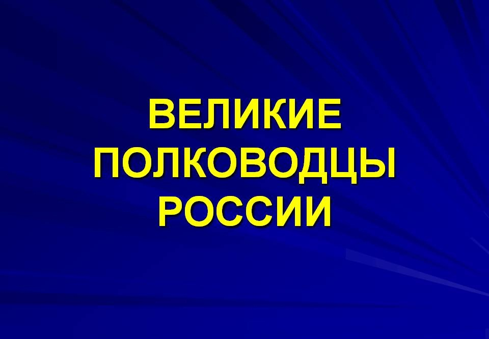

Главная |
||
Навигация |
Великие полководцы |
Наша армия |
|
Наша страна богата талантами и знаменитыми на весь мир историческими личностями. Отдельную категорию ее известных представителей занимают великие полководцы России. Россия и ее жители всегда были мирными и радушными по отношению к другим народам. Однако им постоянно приходилось в течение всего своего существования вести войны. Не всегда это были войны оборонительные. В период становления государства России приходилось, в том числе, и отвоевывать себе земли. Но все же, в основном стране приходилось постоянно защищаться от многочисленных врагов. Рассказывая о великих полководцах России, очень трудно выделить самых значимых из них.

Великие полководцы России – тема очень обширная, поэтому кратко можно рассказать только о самых известных из них. Если начинать с периода становления русского государства, то самая яркая личность того времени – защитник Руси от нападений печенегов, половцев и хазар князь Святослав, живший в X веке. Он видел опасность в слабых границах государства и постоянно укреплял их, проводя почти все время в походах. Святослав погиб, как истинный воин – в бою. |
На горах высоких, На степном просторе Охраняет нашу Родину солдат. Он взлетает в небо, Он уходит в море, Не страшны защитнику Дождь и снегопад. Шелестят берёзы, Распевают птицы, Подрастают дети У родной страны. Скоро я в дозоре Встану на границе, Чтобы только мирные Снились людям сны. |
|
|
IT-CUBE г.Балашова HTML , CSS |
||